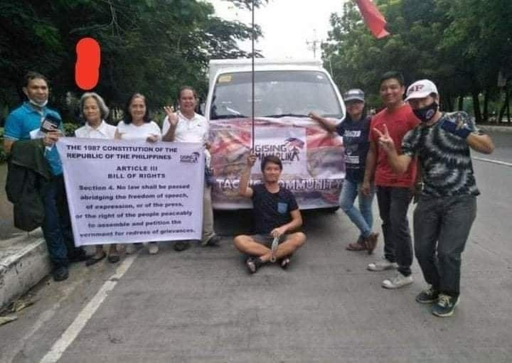

=======
>>>>>>> parent of 1f2b87e (Navigation on Image)
ANTIVAX FILES is a website which discusses the two sides of the problem known as “vaccine hesitancy”. Vaccine hesitancy as the name implies, are a group of people who doesn’t believe in the vaccine through many conspiracies and reasons. Some examples of this could be lack of faith in the government and their belief that the vaccine will cause bad side effects. This led them to be public about their hesitancy towards the COVID-19 vaccine.

ANTIVAXFILES:
